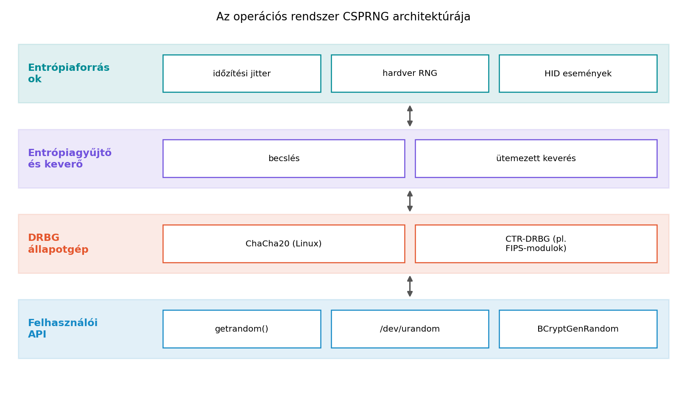

Képzeljük el, hogy egy webkiszolgáló éppen most generál egy új, 256 bites AES-kulcsot a titkosított munkamenethez. A kulcs biztonsága azon múlik, hogy a szerver által használt véletlenszám-generátor kimenete valóban megjósolhatatlan-e. Ha a támadó ismeri a generátor belső állapotát, vagy a kimenet statisztikailag torzított, akkor a teljes titkosítás összeomlik.
Az előző, Véletlenszámok: valódi véletlen, ál-véletlen, kriptográfiai véletlen alfejezetben megismertük a CSPRNG absztrakt követelményeit: a következő bit megjósolhatatlanságát (next-bit unpredictability) és a visszamenőleges biztonságot (backtracking resistance). Ebben az alfejezetben azt vizsgáljuk, hogyan valósítják meg ezeket a tulajdonságokat a gyakorlatban használt determinisztikus véletlenbit-generátorok (DRBG-k), hogyan integrálódnak az operációs rendszerbe, és milyen tanulságokat vonhatunk le a történelem egyik leghíresebb hátsóajtó-gyanús konstrukciójából, a Dual_EC_DRBG-ből.
Az operációs rendszer CSPRNG-je többrétegű rendszer. A fizikai zajforrásokból (időzítési jitter, hardveres RNG, beviteli eszközök eseményei) gyűjtött entrópiát egy keverő réteg finomítja, majd egy DRBG állapotgépét tölti fel. A felhasználói programok csak egy jól definiált API-n keresztül férnek hozzá a kimenethez.

Az ábra azt szemlélteti, hogy a DRBG nem közvetlenül a fizikai zajból sorsol, hanem egy közbülső entrópiatárolóból kap rendszeres frissítést. Ez a szerkezet teszi lehetővé, hogy a rendszer akkor is biztonságos kimenetet adjon, ha a fizikai zajforrás átmenetileg gyenge vagy lassú.
A valódi véletlenszám-generátorok (TRNG-k) fizikai folyamatokból nyerik a biteket, de lassúak és gyakran nem állnak rendelkezésre nagy sebességgel. A gyakorlatban ezért egy determinisztikus algoritmust használunk, amely egy rövid, nagy entrópiájú seedből sok, gyakorlatilag véletlennek tűnő bitet állít elő. Az ilyen algoritmust DRBG-nek (deterministic random bit generator) nevezzük.
Definíció. Determinisztikus véletlenbit-generátor (DRBG). Egy DRBG egy állapotgép, amelyet a következő eljárások határoznak meg:
A DRBG akkor tekinthető kriptográfiailag biztonságosnak, ha a seed egyenletes eloszlású és titkos, valamint a kimenet megkülönböztethetetlen a valódi véletlen bitektől egy olyan támadó számára, aki nem ismeri a seedet.
Megjegyzés. A DRBG kimenete determinisztikus abban az értelemben, hogy ugyanaz a seed és állapot ugyanazt a bitsorozatot adja. A biztonság nem abból fakad, hogy az algoritmus „véletlen”, hanem abból, hogy a seed titkos és nagy entrópiájú.
A gyakorlatban két, széles körben használt DRBG-szerkezetet emelünk ki: a HMAC-DRBG-t és a CTR-DRBG-t. Mindkettőt a NIST SP 800-90A szabvány (a szabványszámot ellenőrzésre javaslom) definiálja, és mindkettő alapötlete, hogy egy biztonságos primitívet (HMAC-ot vagy blokkrejtjelet) használunk az állapot frissítésére és a kimenet előállítására.
A HMAC-DRBG a HMAC konstrukciót használja a belső állapot két komponense, a kulcs és a érték frissítésére. Az állapot mellett egy számláló is tartozik hozzá, amely a seedelések közötti kimenetmennyiséget korlátozza.
Az állapotfrissítés (update) lényege:
A kimenet generálásakor minden blokkhoz:
A generálás után egy frissítő lépés következik (seed nélkül), hogy a kimenet ne árulja el a következő állapotot.
A CTR-DRBG egy blokkrejtjelet (általában AES-t) használ számláló üzemmódban. Az állapot két részből áll: a rejtjelkulcsból és a számlálóból. Egy bites kimenet előállításához a számlálót léptetjük, és minden lépésben kiszámítjuk -t; a kapott blokkok adják a kimenetet. A generálás után az állapotot két további rejtjelezéssel frissítjük, például és (a pontos részletek a szabványban találhatók).
A DRBG-kkel szemben két fontos biztonsági követelményt fogalmazunk meg.
Definíció. Visszamenőleges biztonság (backtracking resistance). Ha a támadó megismeri a DRBG aktuális állapotát, akkor sem tudja kiszámítani a korábban generált kimeneteket.
Definíció. Előremenő biztonság (prediction resistance). Ha a támadó megismeri a DRBG aktuális állapotát, de a rendszer ezután friss entrópiával újra-seedeli a generátort, akkor a támadó nem tudja megjósolni a jövőbeli kimeneteket.
A visszamenőleges biztonságot a DRBG-k úgy érik el, hogy az állapotfrissítés egyirányú: a HMAC-DRBG esetén a HMAC invertálhatatlansága, a CTR-DRBG esetén a blokkrejtjel egyirányúsága akadályozza meg, hogy az aktuális állapotból visszaszámoljuk a régit. Az előremenő biztonság azonban csak akkor teljesül, ha a kompromittálódás után friss entrópia kerül az állapotba. Mivel a DRBG determinisztikus, a jelenlegi állapot birtokában a következő kimenetek elvileg kiszámíthatók; ezért az operációs rendszerek folyamatosan újra-seedelik a DRBG-t az entrópiagyűjtőből.
A gyakorlatban a Linux kernel CSPRNG-je a getrandom()
rendszerhíváson keresztül érhető el; ez a hívás csak akkor tér vissza,
ha az entrópiatároló már kellően feltöltődött. A korábbi
/dev/urandom interfész is ugyanerre a generátorra épül.
Windows rendszeren a BCryptGenRandom, macOS-en a
SecRandomCopyBytes (ellenőrzésre javaslom az API-nevet)
szolgál hasonló céllal.
A CTR-DRBG működésének megértéséhez nézzünk egy szándékosan leegyszerűsített, 4 bites blokkrejtjelet használó változatot. Legyen a blokkrejtjel , ahol és is 4 bites értékek. Ez a konstrukció természetesen nem biztonságos, de jól mutatja az állapotfrissítés mechanikáját.
Tegyük fel, hogy a kezdeti állapot (0110 binárisan) és (0011 binárisan). A generálás első lépése:
A második generálás:
A kimeneti sorozat tehát , (hexadecimálisan írva), ami egy 4 bites generátor esetén elfogadható illusztráció. A valódi CTR-DRBG 128 bites AES-t használ, így a kimenet és az állapot sokkal nagyobb, és a frissítés is két külön rejtjelezést alkalmaz.
Figyelem. Ez a játékpélda azért gyenge, mert az állapot kicsi és a frissítés invertálható: a támadó a 256 lehetséges kezdőállapot kipróbálásával visszaszámolhatja -t (a példában a állapothoz négy jelölt tartozik, köztük a valódi ). A valódi CTR-DRBG-ben az állapottér -nál is nagyobb, és ismeretlen mellett nem invertálható.
A Pythonban mindig az operációs rendszer CSPRNG-jét használjuk. Az
os.urandom közvetlenül a kernel generátorából olvas, a
secrets modul pedig magas szintű, kényelmes függvényeket
ad.
import os
import secrets
# 32 bájt (256 bit) kriptográfiai véletlen kulcs generálása
key = os.urandom(32)
print("Kulcs hossza:", len(key), "bájt")
# Egyszer használatos érték (nonce) generálása
nonce = secrets.token_bytes(12)
print("Nonce:", nonce.hex())
# Véletlen egész a [0, 2^128) intervallumban
r = secrets.randbelow(2**128)
print("Véletlen egész (128 bites):", r)
# Véletlen elem kiválasztása egy listából
choices = ["alma", "körte", "szilva"]
print("Választott elem:", secrets.choice(choices))
# Biztonságos token URL-hez
token = secrets.token_urlsafe(32)
print("Token:", token)Várt kimenet (a konkrét értékek minden futtatáskor mások):
Kulcs hossza: 32 bájt
Nonce: <24 hexa jegy>
Véletlen egész (128 bites): 271838264703885197652682832351992874611
Választott elem: körte
Token: xK7vQ9mN2pLwR8sT1uY4zA6bC0dE3fG5hI7jK9lM0oPA kimenet hossza és formátuma ellenőrizhető, de a konkrét bájtok
természetesen nem reprodukálhatók, ami éppen a cél. A
secrets modul dokumentációja szerint minden függvénye a
rendszer CSPRNG-jét használja, ezért kulcsokhoz, nonce-okhoz, tokenekhez
és jelszóvisszaállító linkekhez ez a helyes választás.
A DRBG-k történetének egyik legtanulságosabb epizódja a Dual_EC_DRBG körül zajlott. Ez a generátor elliptikus görbéket használt a kimenet előállítására. A konstrukció két nyilvános pontot, -t és -t tartalmazott, és a belső állapotot egy skalár képviselte. A generálás során a pontot szorozták -sel, és a kapott pont -koordinátájának egy részét adták ki. Az állapotfrissítés a ponttal végzett hasonló művelettel történt.
A gyanú szerint a tervezők úgy választhatták meg a és pontokat, hogy közöttük egy diszkrét logaritmus összefüggés álljon fenn: . Ha valaki ismeri -t, akkor egy kimeneti blokkból – a csonkított -koordináta kb. lehetséges kiegészítését végigpróbálva – visszaszámolhatja -t, és így előre jelezheti a generátor összes jövőbeli kimenetét. Ez lényegében egy rejtett hátsóajtó, amelyet csak a titkot ismerő támadó használhat ki.
A Dual_EC_DRBG az SP 800-90A része volt, és egyes könyvtárakban (pl. RSA BSAFE) alapértelmezett is; 2014-ben a NIST visszavonásra javasolta (ellenőrizendő). A konstrukcióval kapcsolatos aggodalmak akkor erősödtek fel, amikor 2015-ben (az évszámot ellenőrzésre javaslom) a Juniper Networks bejelentette, hogy a ScreenOS operációs rendszer egyes verzióiban illetéktelen kódmódosítás történt. A támadók a ScreenOS-ben használt pontot saját értékükre cserélték (a maradt), így ők ismerték azt a értéket, amelyre fennáll a és közötti összefüggés, és a NetScreen VPN-eszközök forgalma passzív lehallgatással visszafejthetővé vált. Az incidens rávilágított arra, hogy a kriptográfiai konstansok (görbeparaméterek, és pontok) megbízhatósága ugyanolyan fontos, mint maguk az algoritmusok.
Tanulság. A modern operációs rendszerek nem használnak Dual_EC_DRBG-t: a Linux kernel generátora ChaCha20-alapú, az entrópiát BLAKE2s-sel keveri (kernelverziótól függ, ellenőrizendő); a NIST SP 800-90A HMAC-/CTR-DRBG-it inkább könyvtárak és FIPS-modulok használják. Ahol konstansokra van szükség, azokat nyilvános, ellenőrizhető eljárással kell származtatni („nothing-up-my-sleeve”). A zárt, nem auditálható konstansokkal rendelkező konstrukciók mindig gyanút ébresztenek.
A random modul használata kriptográfiai
célokra. A Python random modulja Mersenne Twistert
használ, amely statisztikailag jó, de nem kriptográfiai biztonságú: 624
egymást követő 32 bites kimenetből a belső állapot visszafejthető.
Kulcsok, nonce-ok és tokenek generálására mindig secrets-et
vagy os.urandom-ot használjunk.
A DRBG kézi seedelése alacsony entrópiájú adattal. Ha valaki a rendszeridőből, folyamatazonosítóból vagy más könnyen kitalálható értékből seedeli a DRBG-t, a támadó a seedet kitalálva az összes kimenetet reprodukálhatja. A seedet mindig az operációs rendszer entrópiagyűjtőjéből kell venni.
Az újra-seedelés elhanyagolása hosszú életű folyamatokban. Ha egy szerverprocessz napokig fut, és a DRBG-jét nem seedeli újra friss entrópiával, akkor egy állapotkompromittálódás után a támadó hosszú ideig előre jelezheti a kimeneteket. A kernel CSPRNG-je ezt automatikusan kezeli, de a felhasználói térben implementált DRBG-k esetén erre külön figyelni kell.
Virtuális gépek klónozása után a CSPRNG állapotának
megosztása. Ha egy virtuális gépet pillanatfelvételből
klónoznak, a klónozott példányok ugyanazzal a DRBG-állapottal
indulhatnak, így azonos véletlen sorozatot generálhatnak. Ezért a
virtualizációs platformoknak friss entrópiát kell biztosítaniuk a
klónozott gépeknek (például a gazdagép által szolgáltatott
virtio-rng eszközzel).
A generált véletlen értékek naplózása vagy tárolása. Ha egy kulcsgenerálás során a seedet vagy a generált kulcsot véletlenül naplózzák, az megsemmisíti a biztonságot. A véletlen biteket soha nem szabad naplózni, és a memóriából használat után törölni kell.
1. feladat (A). Definiálja a DRBG fogalmát, és magyarázza el, miben különbözik a valódi véletlenszám-generátortól (TRNG).
2. feladat (A). A fenti játék CTR-DRBG-ben legyen a kezdeti állapot , . Számítsa ki az első generálás során a kimeneti blokkot és a frissített állapotot, ha .
3. feladat (B). A játék CTR-DRBG-ben a támadó ismeri az aktuális állapotot, de nem ismeri a korábbi állapotot. Tudja-e a támadó kiszámítani az előző kimeneti blokkot, ha a blokkrejtjel ? Válaszát indokolja.
4. feladat (B). Egy virtuális gépet klónoznak, majd mindkét példányban ugyanazt a kulcsgeneráló programot futtatják le. Magyarázza el, milyen kockázatot jelent ez, és hogyan lehet védekezni ellene.
5. feladat (C). A HMAC-DRBG állapotfrissítése során a kulcsot és a értéket a HMAC egyirányú tulajdonságára támaszkodva frissítjük. Vázolja, miért következik a HMAC biztonságából a visszamenőleges biztonság (backtracking resistance).
6. feladat (D). Írjon egy rövid Python-függvényt,
amely secrets segítségével generál egy 16 bájtos nonce-ot
és egy véletlen egészet a
intervallumban. A függvény térjen vissza a két értékkel. Indokolja meg,
miért nem használható a random modul erre a célra.
Önellenőrzés – válaszok
Hamis. A DRBG kimenete determinisztikus, de ha a seed titkos és nagy entrópiájú, a kimenet megkülönböztethetetlen a valódi véletlentől. A determinisztikusság önmagában nem baj; a seed titkossága a lényeg.
A visszamenőleges biztonság azt jelenti, hogy a jelenlegi állapot ismerete nem fedi fel a korábbi kimeneteket. Az előremenő biztonság azt jelenti, hogy a jelenlegi állapot ismerete nem teszi lehetővé a jövőbeli kimenetek megjósolását, feltéve, hogy friss entrópiával újra-seedeljük a generátort.
Mert a DRBG determinisztikus; ha a támadó ismeri az aktuális állapotot, akkor friss entrópia hiányában előre tudná jelezni a jövőbeli kimeneteket. Az újra-seedelés megszakítja ezt a lehetőséget.
A secrets modult (vagy közvetlenül
os.urandom-ot), mert ezek a rendszer CSPRNG-jét használják.
A random modul Mersenne Twistert használ, amely nem
kriptográfiai biztonságú.
A Dual_EC_DRBG-ben a és pontok közötti összefüggés ismeretében a támadó egy kimeneti pontból visszaszámolhatja a belső állapotot, és így előre jelezheti az összes jövőbeli kimenetet.
Az állapotfrissítés célja, hogy a kimenet ne árulja el a következő állapotot, és a generátor ne kerüljön olyan helyzetbe, hogy a kimenetből visszaszámolható legyen a belső állapot.
Feladatok megoldásai
1. feladat. A DRBG egy determinisztikus algoritmus, amely egy rövid seedből hosszú, pszeudovéletlen bitsorozatot állít elő. Az állapota belső, és a generálás során frissül. A TRNG ezzel szemben fizikai zajból nyer valódi véletlen biteket, nem determinisztikus, és általában lassú. A DRBG-t a TRNG-ből származó entrópiával seedeljük.
2. feladat. Kezdeti állapot: (1001), (0001).
3. feladat. Igen, gyakorlatilag. A támadó mind a 256 lehetséges párt kipróbálja, és megtartja azokat, amelyek frissítése a látott -t adja: a játékban legfeljebb 8 jelölt marad, és az előző kimenet legfeljebb 3 érték egyike (a példabeli állapotnál 4 jelölt van, mindegyik ugyanazt a kimenetet, -t adja). A valódi CTR-DRBG-ben az állapottér -nál is nagyobb, és ismeretlen mellett nem invertálható, ezért ez nem lehetséges.
4. feladat. A klónozás után mindkét virtuális gép
ugyanazzal a DRBG-állapottal indulhat, így a kulcsgeneráló program
ugyanazt a kulcsot állíthatja elő mindkét példányban. Ez lehetővé teszi
a támadó számára, hogy az egyik gép kulcsát ismerve a másikét is
kitalálja. Védekezés: a virtualizációs platformnak friss entrópiát kell
biztosítania a klónozott gépeknek, például a gazdagép
virtio-rng eszközén keresztül, vagy a klónozás után azonnal
újra kell seedelni a CSPRNG-t.
5. feladat. A HMAC-DRBG állapotfrissítésekor a kulcs és a érték a HMAC függvényen keresztül változik. Tegyük fel, hogy a támadó ismeri az aktuális állapotot. Ahhoz, hogy a korábbi értéket meghatározza, invertálnia kellene a számítást, ahol sem ismert. A HMAC biztonsága (a mögöttes hash függvény egyirányúsága és a kulcs titkossága) garantálja, hogy ez számításilag kivitelezhetetlen, így a korábbi kimenetek visszafejthetetlenek.
6. feladat. A Python-kód:
import secrets
def generate_crypto_values():
nonce = secrets.token_bytes(16)
random_int = secrets.randbelow(2**128)
return nonce, random_int
nonce, r = generate_crypto_values()
print("Nonce:", nonce.hex())
print("Véletlen egész:", r)A random modul nem használható, mert Mersenne Twistert
használ, amelynek belső állapota 624 kimenetből visszafejthető, és így a
jövőbeli kimenetek megjósolhatók. A secrets a rendszer
CSPRNG-jét használja, amely kriptográfiai biztonságú.
A kriptográfiai véletlenszám-generátorok a gyakorlatban
determinisztikus véletlenbit-generátorok (DRBG-k), amelyeket egy rövid,
nagy entrópiájú seedből inicializálnak, és amelyek állapota minden
generálás után frissül. A HMAC-DRBG a HMAC-ot, a CTR-DRBG a
blokkrejtjelet használja az állapotfrissítésre és a kimenet
előállítására. A visszamenőleges biztonságot az egyirányú frissítés, az
előremenő biztonságot a rendszeres újra-seedelés biztosítja. A
felhasználói programok számára az operációs rendszer CSPRNG-je (Linuxon
getrandom() vagy /dev/urandom, Windowson
BCryptGenRandom, macOS-en SecRandomCopyBytes)
a helyes forrás; Pythonban a secrets modult vagy az
os.urandom-ot használjuk. A Dual_EC_DRBG incidens arra
figyelmeztet, hogy a görbeparaméterek és konstansok megbízhatósága
döntő: egy rejtett diszkrét logaritmus összefüggés hátsóajtót nyithat.
Továbbvitt eredmény. A CSPRNG helyes használata
feltétlenül szükséges az Az RSA helyessége,
kulcsgenerálása és a CRT-gyorsítás alfejezetben a prímek
generálásához, a Nonce-újrahasználat az
aláírásokban és a determinisztikus nonce alfejezetben a nonce-ok
biztonságához, és a Véletlenszám-hibák
alfejezetben elemzett incidensek megértéséhez. A Dual_EC_DRBG tanulsága
a Az ECDLP, speciális támadások és a
görbeválasztás alfejezetben a görbeparaméterek ellenőrzésének,
valamint a Könyvtárválasztás, auditálás,
tesztvektorok és fuzzing alfejezetben a zárt forráskódú komponensek
auditálásának fontosságát alapozza meg.
A DRBG-szerkezetek leírása a NIST SP 800-90A szabványon alapul; a
szabványszámot és a pontos algoritmusrészleteket ellenőrzésre javaslom.
A Linux kernel CSPRNG architektúráját a kernel forráskódja és a
getrandom rendszerhívás dokumentációja írja le; a Windows
és macOS API-neveket ellenőrzésre javaslom. A Juniper ScreenOS-incidens
évszáma és részletei nyilvános beszámolókból származnak, de a pontos
dátumot és az érintett verziókat ellenőrzésre javaslom. A Dual_EC_DRBG
feltételezett hátsóajtó-mechanizmusa ismert kriptográfiai elemzés, de a
szándékosság kérdése továbbra is vitatott. A Python secrets
modul API-ja a hivatalos Python dokumentációban ellenőrizhető.